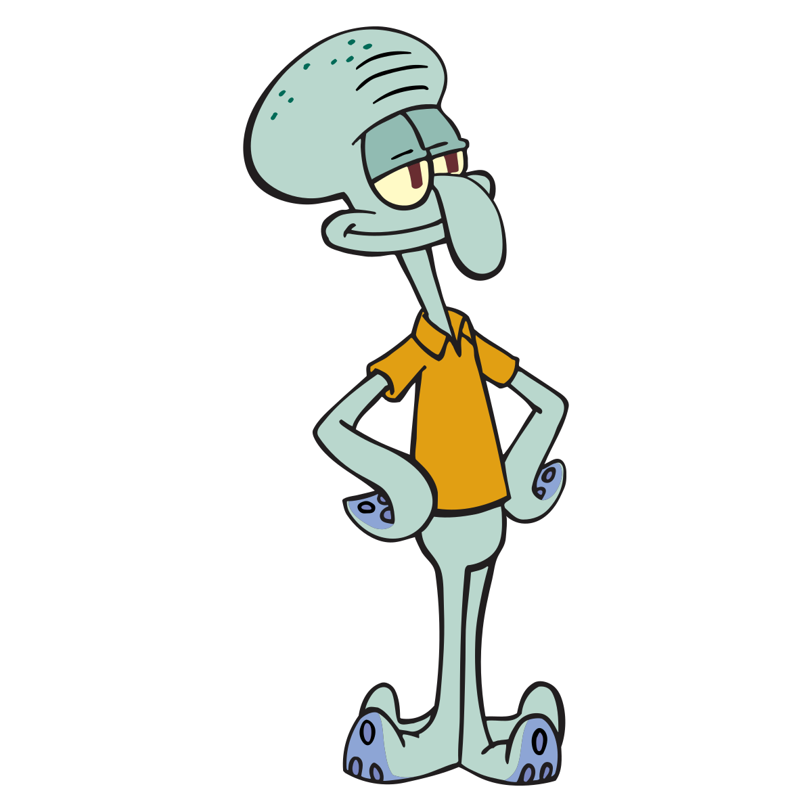
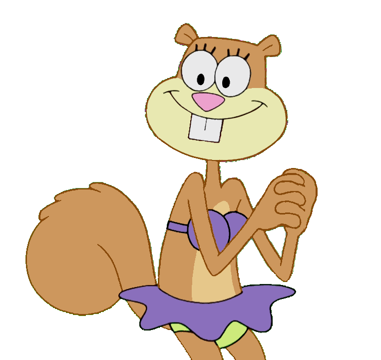
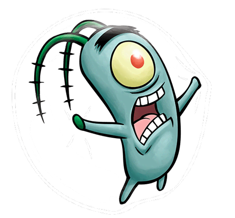
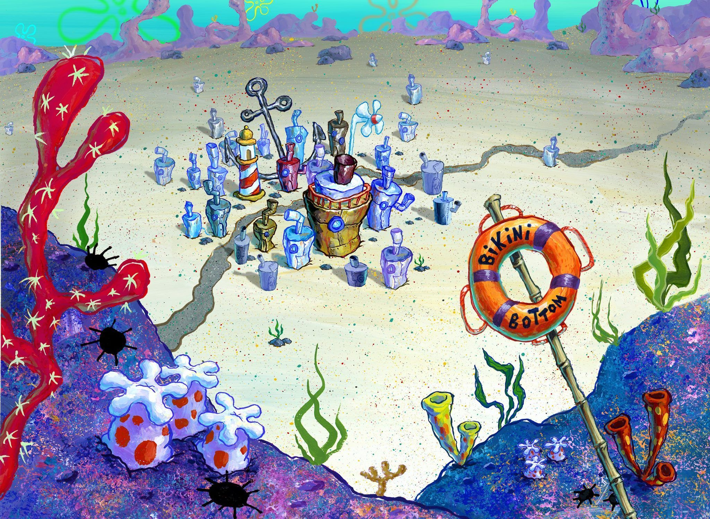
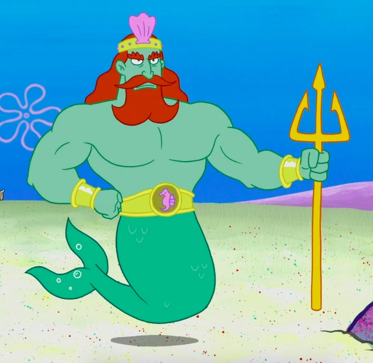

«Губка Боб Квадратные Штаны» — американский мультсериал производства телеканала «Nickelodeon», выпущенный в эфир 17 июля 1999 года и ставший одной из самых популярных анимационных программ телевидения. Это первый по продолжительности показа анимированный сериал телеканала Nickelodeon, обогнавший «Ох уж эти детки!» (англ. «Rugrats») — на данный момент он насчитывает девять полных сезонов.
Губка Боб Квадратные Штаны — главный герой американского одноимённого мультипликационного сериала, премьера которого состоялась 1 мая 1999 года в США, и 1 января 2000 года в России на канале «Nickelodeon». Персонаж был придуман морским биологом и аниматором Стивеном Хилленбергом и озвучен актёром Томасом Кенни (в русской версии персонаж озвучен Сергеем Балабановым). В России также известен как Спанч Боб Сквэр Пэнтс (фонетическая транскрипция). Судя по сведениям из его водительского удостоверения, он родился 14 июля 1986 года.
Сквидвард

Сквидвард Квентин Тентаклс — один из главных персонажей американского мульт-сериала «Губка Боб Квадратные Штаны», премьера которого состоялась 1 мая 1999 года на канале «Nickelodeon». Сквидвард был придуман морским биологом и художником-мультипликатором Стивеном Хилленбергом и озвучен актёром Роджером Бампассом (в русской версии персонаж озвучен Иваном Агаповым). Он впервые появился на телевидении в пилотном эпизоде сериала «Требуется помощник» 1 мая 1999 года. Хилленберг создал образ Сквидварда с шестью щупальцами для более простой анимации.
Патрик
Патрик Стар — один из самых главных персонажей американского мультсериала «Губка Боб Квадратные Штаны», озвученный Биллом Фагербакки, а в русском варианте — актёром Юрием Маляровым. Патрик — глуповатая, но совестливая розовая морская звезда плотного телосложения. Герой обычно одет в зелёные (гавайские) шорты с фиолетовыми цветами. В русской озвучке также назывался Патрик Морская Звезда.
Сэнди

Сандра Дженнифер "Сэнди" Чикс - это один из десяти главных персонажей мультсериала "Губка Боб Квадратные Штаны". Это белка с поверхности, которая носит водолазный костюм и живет в наполненной воздухом стеклянном куполе. Её озвучивает Кэролин Лоуренс.
Планктон

Шелдон Питер Джей Планктон — один из десяти главных персонажей мультсериала "Губка Боб Квадратные Штаны". Он управляет неудачным рестораном под названием "Чам Баккет" вместе с Карен, водонепроницаемым компьютером, которая является его женой.
Бикини Ботом

Бикини Боттом- это город, который является основным параметром в мультсериале "Губка Боб Квадратные Штаны". Как показано в эпизоде "Что же случилось с Губкой Бобом?", город имеет надлежащее население около 538, через многие эпизоды, как правило, изображают гораздо больший масштаб.
Бикини Боттом состоит из различных предприятий, включая рестораны, магазины и производителей. Город имеет стабильную экономику, сбалансированную систему образования, сомнительное здравоохранение и трудовое законодательство, структурированное правительство и прочную правоохранительную систему. Есть даже стадионы, парки развлечений и другие места отдыха, такие как Мир Перчаток.
Бикини Боттом также является домом для почти всех персонажей шоу.
История

Что интересно, город имеет глубокую историю. В некоторых сериях есть изображение исторических событий.
Основные даты в истории:
5 июля 3010 года до н. э. — Родился Король Нептун.
20 февраля 1106 года — Основание Бикини-Боттома как столицы королевства.
1691 год — Гражданская война. Победа повстанцев во главе с Патрикасом. Провозглашение республики.
XVIII/XIX век — распад Республики.
6 ноября 1892 года — Мёртвый Глаз получает контроль над Ущельем Бикини и переименовывает его в Ущелье Мертвого Глаза.
1895 год — Губка Бак победил Мёртвого Глаза, вернул городу название Бикини-Боттом.
1915—1919 годы — Первая морская война.
1916 год — погибает Губка Бак, реставрация монархии.
1918 год — Амёбская династия получает контроль над Бикини-Боттом.
16 сентября 1950 — 6 ноября 1959 год — Вторая морская война (альтернативная вселенная)
2004 год — Планктон похищает корону Нептуна и продает её в Шелл Сити, позже её вернули обратно Губка Боб и Патрик.
19 февраля 2007 год — Амёбская династия возвращает контроль над монархией в Бикини-Боттом.
 Губка Боб Квадратные Штаны — главный герой американского одноимённого мультипликационного сериала, премьера которого состоялась 1 мая 1999 года в США, и 1 января 2000 года в России на канале «Nickelodeon». Персонаж был придуман морским биологом и аниматором Стивеном Хилленбергом и озвучен актёром Томасом Кенни (в русской версии персонаж озвучен Сергеем Балабановым). В России также известен как Спанч Боб Сквэр Пэнтс (фонетическая транскрипция). Судя по сведениям из его водительского удостоверения, он родился 14 июля 1986 года.
Губка Боб Квадратные Штаны — главный герой американского одноимённого мультипликационного сериала, премьера которого состоялась 1 мая 1999 года в США, и 1 января 2000 года в России на канале «Nickelodeon». Персонаж был придуман морским биологом и аниматором Стивеном Хилленбергом и озвучен актёром Томасом Кенни (в русской версии персонаж озвучен Сергеем Балабановым). В России также известен как Спанч Боб Сквэр Пэнтс (фонетическая транскрипция). Судя по сведениям из его водительского удостоверения, он родился 14 июля 1986 года.
 Патрик Стар — один из самых главных персонажей американского мультсериала «Губка Боб Квадратные Штаны», озвученный Биллом Фагербакки, а в русском варианте — актёром Юрием Маляровым. Патрик — глуповатая, но совестливая розовая морская звезда плотного телосложения. Герой обычно одет в зелёные (гавайские) шорты с фиолетовыми цветами. В русской озвучке также назывался Патрик Морская Звезда.
Патрик Стар — один из самых главных персонажей американского мультсериала «Губка Боб Квадратные Штаны», озвученный Биллом Фагербакки, а в русском варианте — актёром Юрием Маляровым. Патрик — глуповатая, но совестливая розовая морская звезда плотного телосложения. Герой обычно одет в зелёные (гавайские) шорты с фиолетовыми цветами. В русской озвучке также назывался Патрик Морская Звезда.